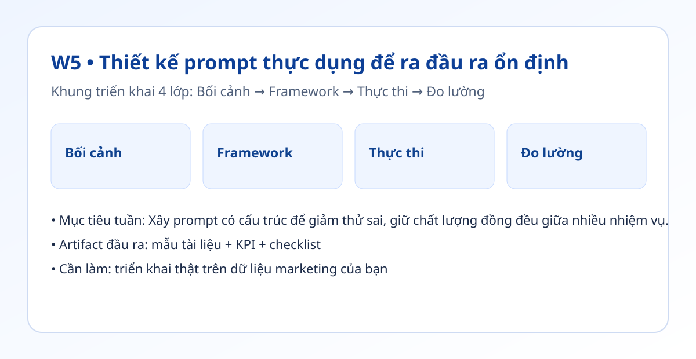

Hình trực quan mô-đun

Bối cảnh thực tế
- Prompt ngắn và mơ hồ thường tạo đầu ra đẹp mắt nhưng thiếu tính triển khai.
- Mục tiêu của marketer không chỉ là viết hay, mà là tạo đầu ra đo lường được.
- Tuần này tập trung vào prompt dạng khung và thư viện tái sử dụng.
Khung tư duy cốt lõi
- Mẫu prompt 6 lớp: Vai trò, Bối cảnh, Nhiệm vụ, Ràng buộc, Format đầu ra, Tiêu chí đạt.
- Prompt library theo nhóm: Research, Content, Ads, CRM.
- Quy trình cải tiến prompt: đo lỗi → phân tích lỗi → cập nhật prompt.
Quy trình triển khai chi tiết
- Bước 1: Lấy 5 tác vụ lặp lại nhất tuần hiện tại.
- Bước 2: Tạo prompt khung cho từng tác vụ theo mẫu 6 lớp.
- Bước 3: Thêm 1-2 ví dụ chuẩn để định hướng chất lượng.
- Bước 4: Đặt format đầu ra bắt buộc (độ dài, cấu trúc, CTA, ngôn ngữ).
- Bước 5: Test prompt trên 3 dữ liệu khác nhau để kiểm tra độ ổn định.
- Bước 6: Lưu prompt đạt chuẩn vào thư viện và gắn version.
Tình huống nhỏ với số liệu
| Loại prompt | Thời gian ra bản nháp | Tỷ lệ qua QA vòng 1 |
|---|---|---|
| Prompt mơ hồ | 35 phút | 40% |
| Prompt có khung | 18 phút | 80% |
| Prompt có ví dụ | 17 phút | 85% |
Kết luận: Prompt có cấu trúc + ví dụ chuẩn giúp rút ngắn thời gian và giảm tỷ lệ phải viết lại.
Sản phẩm bàn giao tuần này
- Thư viện 20 prompt chia theo nhóm công việc.
- Mẫu versioning prompt (v1, v1.1, v1.2).
- Checklist kiểm tra prompt trước khi sử dụng.
Bài tập thực hành (45-60 phút)
- Tạo 4 prompt mới, mỗi nhóm 1 prompt.
- Chạy thử trên 3 đầu vào khác nhau để đo độ ổn định.
- Sửa prompt đến khi tỷ lệ qua QA >= 80%.
Thang đo hoàn thành
| Mức | Mô tả |
|---|---|
| Mức 0 | Prompt chỉ có câu lệnh chung |
| Mức 1 | Có khung nhưng thiếu format đầu ra |
| Mức 2 | Có khung + format + tiêu chí đạt |
| Mức 3 | Có thư viện và đo tác động rõ ràng |
Lỗi thường gặp
- Nhồi quá nhiều yêu cầu trong một prompt.
- Không tách rõ bối cảnh và nhiệm vụ.
- Không lưu phiên bản prompt đã tối ưu.
Video thực hành (tùy chọn)
Phần học chính đã đầy đủ bằng văn bản và ví dụ. Nếu bạn muốn xem thao tác thực tế, dùng các video gợi ý sau:
Đánh dấu tiến độ
Tuần này chưa hoàn thành
Đã hoàn thành tuần 5